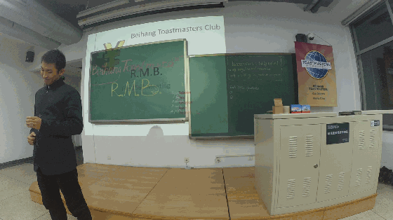
If there is a word could bestly characterize Deron's vivid performance at the start f our meeting, I would choose ingenious. He chose one small direction in our daily life to show the difference between poor and rich, which i couldn't agree more, just forgive the awkward perspection of the video camera

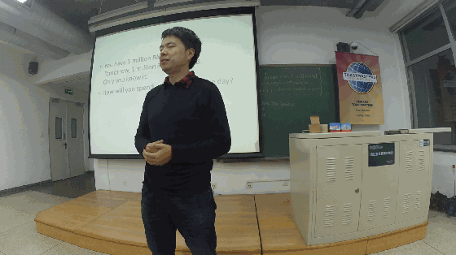
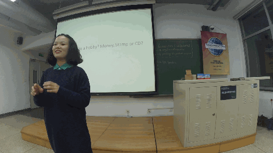
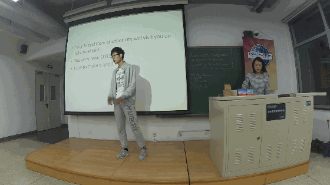
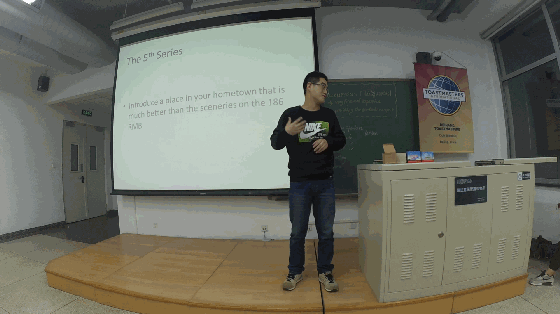
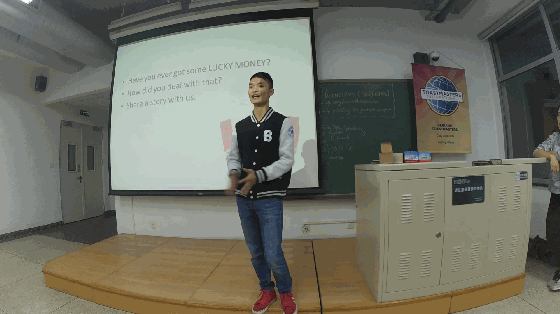
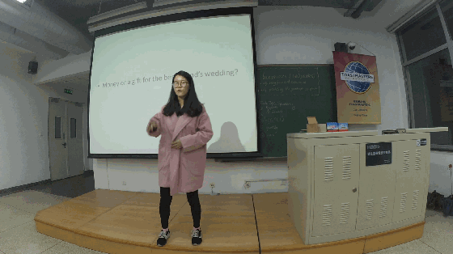
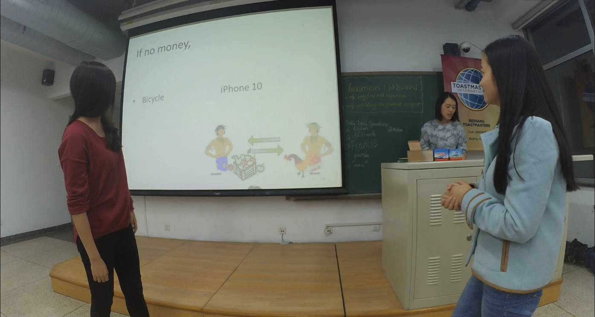

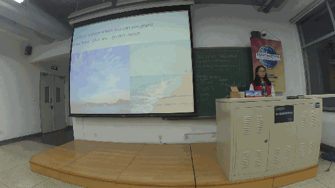
Love the way you live, and love the way you lie.
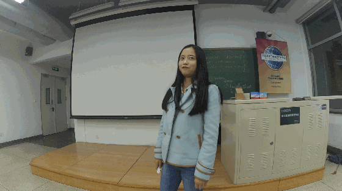
Humor? like this?


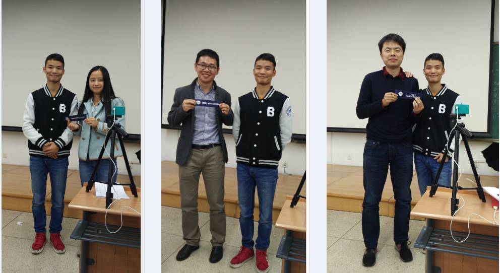
Best speaker to Kiki, for her great CC9 speech
Best evaluator to Antonio, for his professional evaluation
Best table topic speaker to keven, for his wonderful table topic speech
forgive gastby's ignorance(for his standing alone in each picture), he knows no manner, he is just a child, and forgive his busyness.
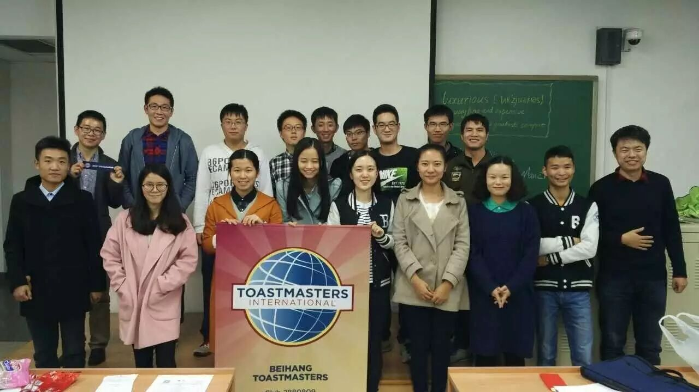
the final group picture
Beihang toastmaster welcome everyone who loves comunication
byspeaking English as well as chinese
if you want your voice be heard in public without no fear
come to our stage and show you
meet you at every Friday night 7:30pm
position: please wait notification before each meeting.....
TT-keven 链接：http://pan.baidu.com/s/1i46HMuD 密码：5cdq
TT-Maria 链接：http://pan.baidu.com/s/1eR2KiCM 密码：3gfo
TT-Francis 链接：http://pan.baidu.com/s/1c2NxpDI 密码：rj2j
Op-Deron 链接：http://pan.baidu.com/s/1gfnzrVX 密码：rt4n
CC-kiki 链接：http://pan.baidu.com/s/1nv2MgWh 密码：dcuf
TT-milton 链接：http://pan.baidu.com/s/1eSLXqW6 密码：iyud
TT-gastby 链接：http://pan.baidu.com/s/1pLKYVX5 密码：a1w7
TT-sophia 链接：http://pan.baidu.com/s/1nvnTePF 密码：yqku
CC-britney 链接：http://pan.baidu.com/s/1o7T8opc 密码：ja18
TT-KIKI && ZhaoMan 链接：http://pan.baidu.com/s/1qXNy7i0 密码：wqle
https://mp.weixin.qq.com/s/878Rr2cjkiPRfX5-XSaS5A
本页为抢救式本地归档，图文已永久保存。